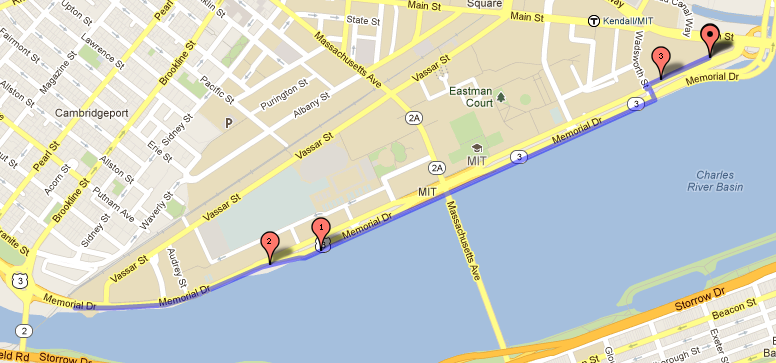

FitOps 5K Run/Walk
Get your fitness on! Run, walk, skip, or fly!
- Where: Start/finish at the NERD Center on Memorial Dr
- When: 2013-03-29T07:00:00-0500 (March 29th @ 7AM)
- Why: Be fit!
How do I sign up?
Signing up will help me record your run times after the race! It also gives me a way to contact you in case I need to update everyone on changes/etc.
Just fill out the above, and you'll be good to go!
How do I graph it?
If it's not monitored, it's not in production! Got iPhone or Android? Download the "Strava Run" app. Use this to record your efforts during the 5k.
What's the route?
It's a nice route along on the edge of the Charles River.
The route starts at the NERD Center along Memorial Dr, and continues along the river until you reach the DeWolfe Boathouse. Once there, double back and retrace your steps along the river back to the start!
Because the route sends you back the way you came, high-fives with fellow participants are encouraged.
(click for an interactive map)
Join us in Boston.
We'll be hearing talks from leading open source developers and web operations luminaries, and then taking what we've learned to apply it towards advancing the state of open source monitoring and trending software.
Why me?
Because you care about the tools that you work with. You're an artisan within your team and want to help improve the work environment for you and your peers. We've all heard that monitoring sucks, but you want to do something about it.
Boston in March?
You better believe it. The end of March is already in Spring and the weather is starting to warm up. Bring a light jacket and prepare to kick ass.
I'm convinced. What now?
As of November 21, we've sold out of all general admission tickets. However, you can join our Waiting List and we'll notify you if any tickets become available.
Meet the Speakers.
Not Your Average Single-Track.
Monitorama takes place March 28-29, 2013 in Boston's NERD Center. Thursday is dedicated to single-track sessions that should educate and inspire you for the activities to come. On Friday plan to roll up your sleeves, break out into workshops to level up your artisanal tools (e.g. Logstash filters, D3.js, etc), or jump right into the hackathon and pair up with a team or hack on your own.
| Thursday | ||
|---|---|---|
| 08:00-08:45 | registration & breakfast | |
| 08:45-09:00 | welcome - Jason Dixon | |
| 09:00-09:30 | keynote - John Allspaw | |
| 09:30-10:00 | keynote - Dr. Neil J. Gunther | |
| 10:00-10:30 | session - Mathias Meyer | |
| 10:30-10:45 | morning break | |
| 10:45-11:00 | sponsor talks | |
| 11:00-11:30 | session - Cliff Moon | |
| 11:30-12:00 | session - John E. Vincent | |
| 12:00-12:30 | session - Jesse Newland | |
| 12:30-13:30 | catered lunch | |
| 13:30-13:45 | sponsor talks | |
| 13:45-14:15 | session - Aaron Quint | |
| 14:15-14:45 | session - Mark Imbriaco | |
| 14:45-15:15 | session - Laura Thomson | |
| 15:15-15:30 | afternoon break | |
| 15:30-15:45 | sponsor talks | |
| 15:45-16:15 | session - Kyle Kingsbury | |
| 16:15-16:45 | session - Jordan Sissel | |
| 16:45-17:15 | session - Joseph Ruscio | |
| 17:15-18:00 | panel session | |
| 19:00-22:00 | after-party @ The Asgard | |
| Friday | ||
| 08:00-08:45 | registration & breakfast | |
| 08:45-09:15 | hackathon - kickoff | |
| 09:15-10:15 | workshop - Daniel Schauenberg StatsD |
hackathon |
| 10:15-11:15 | workshop - Pete Fritchman Logstash |
|
| 11:15-12:15 | workshop - Sean Porter Sensu |
|
| 12:30-13:30 | catered lunch | |
| 13:30-14:30 | workshop - Michael Leinartas Graphite |
hackathon |
| 14:30-15:30 | workshop - Mike Dewar D3.js |
|
| 15:30-16:30 | workshop - Dr. Neil J. Gunther R |
|
| 16:30-18:00 | lightning talks & awards | |
Tips to H❤ckathon By
Preparation is key. Have an idea what you want to work on. Know your tools beforehand so you can dive right in.
Be flexible. You might want to go it alone, or decide you want to join a team. Or multiple teams. Or work on multiple tasks by yourself.
Adjust your scope. Understand that you're working within the constraints of a typical workday. We're not going to fix the entire Monitoring toolchain in a single day.
There will be distractions. You're going to be surrounded by a couple hundred like-minded people who want to share their experiences and wisdom (or ask for yours). Bring headphones if you want some "quiet time".
Ask questions. Enjoy the workshops (but not too many). Be inquisitive but focused.
Enjoy the limelight. We might ask you to present your work(s) in a 5-minute demo. Embrace the opportunity to share your passion with others. We ❤ you and want you to succeed.
Have fun. Leave your prejudices at the door. Meet new people and have a great time. We're holding this event to help make things better. You're a part of that now and no one can ever take that away from you.
Registration is... Sold Out!
Tickets sold out at 16:33 EDT on November 21, 2012.We Love Our Sponsors.
GitHub provides tools to collaboratively develop and host source code. Code review, issue tracking, wikis with ReST, AsciiDoc, and Markdown support -- our goal is to make it easier for you and your team to build great software, whether your team is your co-workers sitting next to you or strangers across the globe. Open source can use GitHub completely for free, making it a great place to discover interesting projects, while businesses can feel safe with our secure private offerings.
Application Performance Monitoring for the Cloud
Boundary's Application Performance Monitoring is designed for Cloud Environments. Boundary’s vision is to drive the next wave of distributed applications by making it easy to monitor and maintain applications in highly dynamic IT environments. Cloud-based architectures, modern application components, and customer demand for continuous quality of service require a much faster, easier and more relevant way to monitor applications.
With Boundary:
- Assure Application Performance in the Cloud
- Increase Visibility into Cloud Applications
- Prevent Problems with Business-Critical Cloud Apps
Librato is the creator of Metrics, a cloud-based service that helps businesses monitor all aspects of their operation, be it their cloud or datacenter infrastructure, their applications, their business metrics, or even their sensor network. It is a platform for storing, visualizing, correlating and acting on any and all of the time series data they want to monitor. Whether data is collected with open source collection agents, via language bindings, or via simple scripts, with Metrics all monitoring data is brought together in a unified hosted environment, helping users to see trends, detect signs of problems early, minimize their impact through automated actions, and quickly find and fix their root cause. Its ease of use, and stunning graphs and dashboards make it both easier and more fun to safeguard the availability and performance of any applications.
AppFirst provides critical business and system visibility solutions, allowing organizations to closely align their IT systems with their business goals in order to manage business risks. Today, the successful business is more than just customer-focused – it is customer-obsessed. With IT/DevOps sitting at the nexus of customers and the services they consume, they now have unique knowledge and are ideally situated to lead the organization. AppFirst is delivering these solutions to Tech Execs and DevOps organizations in more than 70 countries around the world.
AppFirst's combination of platform and solutions enable IT to integrate business performance and system metrics into a single repository. With this capability, IT can impact their organizations in powerful ways:
- Sharing insights about customers
- Helping the organization to innovate at the most grassroots level
- Executing to bring innovations to market
- Resolving issues before their customers know there is a problem.
Datadog is a monitoring and analytics platform that covers the full monitoring cycle: from code changes to deployments to alerts. Thanks to its 5-minutes setup, wide application support, pretty charts and open API, Datadog is immediately useful to both development and operations teams.
Mozilla is a proudly non-profit organization dedicated to keeping the power of the Web in people’s hands. We’re a global community of users, contributors and developers working to innovate on your behalf. When you use Firefox, or any Mozilla product, you become a part of that community, helping us build a brighter future for the Web.
Sonian’s cloud-powered information archiving platform enables organizations to address eDiscovery needs, achieve regulatory compliance, and reduce IT costs. Sonian’s archiving services can be deployed in minutes, require no hardware or software, and are compatible with many email, instant messaging, and social media systems. Sonian provides the only archiving offerings in the market built from the ground up using advanced cloud computing technologies. Over 11,000 customers benefit from Sonian’s industry-leading security, performance, and usability. Boasting strong partnerships with the world’s leading technology companies, Sonian combines innovative technology with deep archiving expertise to satisfy customers of all sizes and industries.
New Relic, Inc. is the all-in-one web application performance management provider for the cloud and the data center. Its SaaS solution, which combines real user monitoring, application monitoring, and server monitoring in a single solution built from the ground up, changes the way developers and operations teams manage web application performance in real-time. More than 30,000 organizations use New Relic to optimize over 8 billion transactions in production each day.
Basho Technologies is the leader in distributed systems.
Basho's flagship software is Riak, an open source, distributed database used in production by companies like Comcast, enStratus, GitHub, and BestBuy. Riak is made to scale out (and in) with applications, be highly-available, and simplify operations at scale for developers and ops professionals.
Fastly is a new generation CDN service created by Artur Bergman, the former CTO of Wikia. Fastly’s exclusive technology is designed to speed up your entire site architecture for highly dynamic applications. Fastly caches both static and dynamic content and allows you to run instant purges that enable you to build a more robust and dynamic application. Real-time analytics and dashboard provide you intelligence and control to deliver a better end user experience. Fastly was founded in 2011 and is funded by Battery Ventures and O’Reilly AlphaTech Ventures.
Elasticsearch is a real-time big data search and analytics company that develops and supports Elasticsearch, a popular and rapidly growing open source solution. Used by thousands of enterprises in virtually every vertical market, Elasticsearch revolutionizes big data search and analytics by empowering anyone to turn it into valuable information to improve business results. Elasticsearch provides enterprise-grade technical production support, development support, consulting and training for enterprises, systems integrators and software vendors worldwide. For more information, visit www.elasticsearch.com.
Circonus is platform for monitoring the health and performance of an entire organization. Finally, the advanced tools that power IT side can be used to understand telemetry throughout your entire organization.
The stunningly beautiful and easy to construct graphs in Circonus just aren't enough for today's data scientists. Deep analytics are the name of the game today and Circonus provide unparalleled access to your telemetry data for tomorrow's Big Data questions. Say hello to optimal, more effective decisions.
Circonus Predictive Analytics detect when things "look wrong" going far beyond the threshold alerts of yesterday's tools. Today's high-velocity businesses, have reminded us all that real-time is sub-second. Circonus takes the daunting task of applying big data solutions to real-time data, delivers innovative new online algorithms in a system that just works and just scales.
Circonus is available as both SaaS and on-premise private cloud making a perfect fit for any organization.
Tumblr lets you effortlessly share anything.
Post text, photos, quotes, links, music, and videos from your browser, phone, desktop, email or wherever you happen to be. You can customize everything, from colors to your theme's HTML.
PagerDuty is the leading SaaS alerting and incident tracking solution helping IT organizations resolve problems within their infrastructure as fast as possible. PagerDuty integrates with your monitoring tools and handles the people part of the equation: alerting (via phone, SMS, email), on-call team scheduling, and automatic escalation of critical issues. Try PagerDuty free for 30-Days at www.pagerduty.com.
We develop and operate secure, scalable browser-based financial applications that help manage billion-dollar portfolios, feed complex quantitative financial models, and fuel the sales and trading desks of the world's largest investment banks. Our teams in London, New York, Boston and Hong Kong work with over 500 institutions, from global investment banks to regional niche firms, and over 150 institutional investors, including major hedge funds, traditional money managers and funds of hedge funds.
We give our technology teams the freedom to use the tools and languages that they need to solve the problems inherent in these systems. We offer a fun, challenging, and rewarding working environment and the opportunity to work with world-class talent to help you build a world-class career.
Cobenian is a small software services firm that specializes in professional DevOps. We build network automation and monitoring solutions that scale and enable real time analytics. We help network operators secure DNS and BGP.
Our software powers the Internet, yet you've never heard of us. That's because we craft rock solid software that allows you to focus on your business and not worry about your operations, even when your operations is your business.
Our customers depend on us to quickly deliver well documented solutions that "just work". To learn how we can help you improve your operations, check out http://www.cobenian.com today!
O'Reilly Media spreads the knowledge of innovators through its books, online services, magazines, research, and conferences. Since 1978, O'Reilly has been a chronicler and catalyst of leading-edge development, homing in on the technology trends that really matter and galvanizing their adoption by amplifying "faint signals" from the alpha geeks who are creating the future. An active participant in the technology community, the company has a long history of advocacy, meme-making, and evangelism.
The Microsoft New England Research & Development Center (NERD) is a research and software innovation campus located in the heart of Cambridge, Massachusetts. The NERD vertical campus spans two buildings with its primary presence and conference center located at One Memorial Drive and a recently renovated and expanded space located at One Cambridge Center. NERD is home to some of Microsoft’s most strategic teams including Microsoft Research New England, Microsoft Application Virtualization (App-V), SharePoint Workspace, Microsoft Technical Computing, Microsoft Advertising, Microsoft Lync, Microsoft Office 365 and more. NERD has become a hub of activity for the local tech community and has hosted more than 900 events and welcomed more than 80,000 visitors during the past three years.
Want to Be a Sponsor?
 Gold Sponsors - $3000
Gold Sponsors - $3000
- Five-minute live demonstration or talk in front of all attendees
- Premier placement on the Monitorama website
- Logo displayed prominently on event banners
- Two (2) free attendee passes
 Silver Sponsors - $1000
Silver Sponsors - $1000
- Company logo and bio on the Monitorama website
- Logo displayed on event banners
- One (1) free attendee pass
For sponsorship opportunities, or to inquire about custom packages, please email us and we'll be happy to assist you.
Where It All Happens.
We are enormously grateful to Microsoft for graciously offering the use of their NERD facility for the Monitorama event, without which this conference and hackathon would not be possible.
The Microsoft New England Research & Development Center (NERD) is a research and software innovation campus located in the heart of Cambridge, Massachusetts. The NERD vertical campus spans two buildings with its primary presence and conference center located at One Memorial Drive and a recently renovated and expanded space located at One Cambridge Center. NERD is home to some of Microsoft’s most strategic teams including Microsoft Research New England, Microsoft Application Virtualization (App-V), SharePoint Workspace, Microsoft Technical Computing, Microsoft Advertising, Microsoft Lync, Microsoft Office 365 and more. NERD has become a hub of activity for the local tech community and has hosted more than 900 events and welcomed more than 80,000 visitors during the past three years.

Looking for a Hotel?
We don't have a formal block of rooms reserved for the hotel, but we suggest either The Kendall Hotel or the Marriott Cambridge while there's space available. Both are walking distance from the NERD Center and have good reviews.
From Logan International Airport
- Take the Silver Line SL1 Express Bus Service from Logan to South Station (21 minutes)
 Transfer to the Red Line Subway towards Alewife and get off at Kendall/MIT (7 minutes)
Transfer to the Red Line Subway towards Alewife and get off at Kendall/MIT (7 minutes) Walk to the Microsoft New England Research and Development Center (7 minutes)
Walk to the Microsoft New England Research and Development Center (7 minutes)
From Boston South Station (Amtrak)
- Take the Red Line Subway towards Alewife and get off at Kendall/MIT (7 minutes)
- Walk to the Microsoft New England Research and Development Center (7 minutes)
Local Travelers
Check out the directions provided by the Microsoft NERD Center.